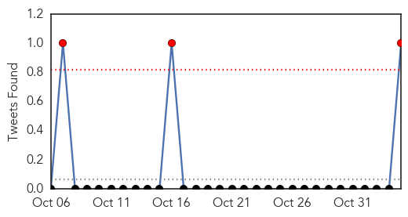
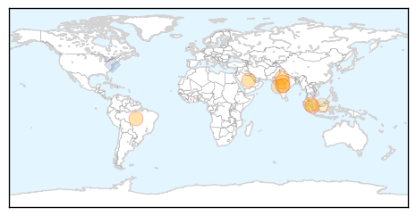
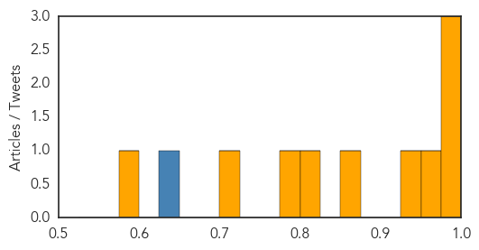
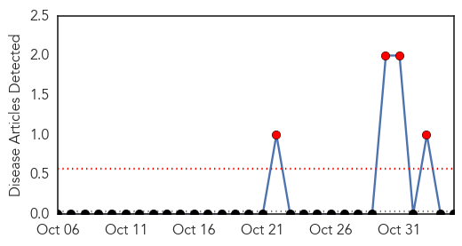

Dengue Fever
30-Day Web Trend
1 alerts, 0 warnings
30-Day Twitter Trend
3 alerts, 0 warnings

Article Locations
Article Confidences
Top Articles:
- 0.995
- News Scan for Nov 04, 2014
- 0.991
- Read Health News & Articles at TheHealthSite.com
- 0.980
- Bhopal reports 500th dengue case, no end in sight
- 0.956
- New dengue vaccine tested in Brazil proven effective
- 0.928
- 78-year-old is 4th person to die from dengue this year
- 0.865
- Crisis meeting following spike in dengue cases
- 0.815
- World's 1st dengue vaccine likely by 2015: Sanofi : World, News
- 0.778
- World’s first dengue vaccine likely by 2015: Sanofi
- 0.719
- World's 1st dengue vaccine likely by 2015
- 0.575
- Dengue: Muhyiddin chairs National-Level Committee meeting
Top Tweets:
- 0.912
- Results of pediatric dengue vaccine trial reported; Ebola updates. HealthSecurity http://t.co/H1JhGDbj22
- 0.593
- Dengue vaccine tested on Indian adults, found safe http://t.co/lRNm0l63ic malaria globalhealth
- 0.513
- Flavivirus news: Dengue update: Bhopal dengue cases cross 500 - TheHealthSite: TheHealthSiteDen... http://t.co/jCfvjcU5vO pathogenposse
Bubonic Plague
30-Day Web Trend
4 alerts, 0 warnings

30-Day Twitter Trend
0 alerts, 0 warnings

Article Locations

Article Confidences

Top Articles:
-
No articles found for Nov 04, 2014
Top Tweets:
-
No tweets found for Nov 04, 2014